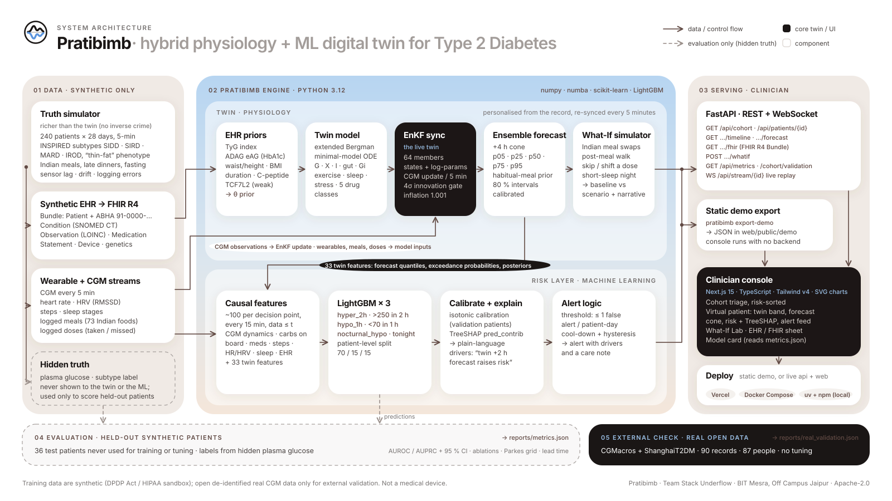

| Layer | Component | What it does | Tech · code |
|---|---|---|---|
| Data | Truth simulator | Generates 240 synthetic Indian T2D patients × 28 days from INSPIRED-style archetypes, with richer physiology than the twin, Indian lifestyle, sensor and logging artefacts. | numpy, numba · engine/pratibimb/cohort/ |
| Data | Synthetic EHR → FHIR R4 | Labs, conditions, medications, genetics as one FHIR R4 collection Bundle per patient, ABHA-format identifier, LOINC and SNOMED CT codes. | cohort/ehr.py, cohort/fhir.py |
| Twin | EHR priors | TyG index, ADAG eAG, waist/height, BMI, duration, C-peptide and TCF7L2 → prior means and spreads for SI, SG, β, EGP, meal rate, dawn. | twin/priors.py |
| Twin | Twin model | Extended Bergman minimal model (glucose, insulin action, insulin, two gut compartments, interstitial glucose) with exercise, sleep, stress and drug effects. | numba kernels · physiology/ |
| Twin | EnKF sync | 64-member stochastic Ensemble Kalman Filter over states + log/logit parameters; CGM update every 5 min, innovation gating, inflation. | twin/enkf.py, twin/assimilate.py |
| Twin | Forecast · What-If | 240-min ensemble forecast with a habitual-meal prior and calibrated intervals; counterfactual meals, walks, doses and sleep from the same ensemble. | twin/forecast.py, api/service.py |
| ML | Features · LightGBM | ~100 causal features incl. 33 twin features at 15-min decision points; LightGBM per task (hyper_2h, hypo_1h, nocturnal_hypo). | LightGBM · ml/features.py, ml/train.py |
| ML | Calibration · TreeSHAP · alerts | Isotonic calibration on validation patients; TreeSHAP drivers mapped to clinician text; thresholds, cool-down and hysteresis. | scikit-learn · ml/explain.py, ml/alerts.py |
| Evaluation | Held-out scoring | Patient-level 70/15/15 split; AUROC/AUPRC with bootstrap CIs, ablation, forecast RMSE/MARD vs baselines, Parkes error grid, lead time. | ml/evaluate.py, ml/parkes.py → reports/ |
| Serving | FastAPI · static export | REST + WebSocket replay (SPEC §5 contract), or a static JSON export so the console runs with no backend. | FastAPI, uvicorn · api/, export.py |
| UI | Clinician console | Landing page, cohort triage, virtual patient, What-If Lab, EHR/FHIR sheet, model card; offline demo mode. | Next.js 15, React 19, Tailwind v4, Radix, Motion · web/ |
| Deploy | Targets | Vercel (static demo), Docker Compose (api + web), or local uv + npm. | docker-compose.yml, */Dockerfile |